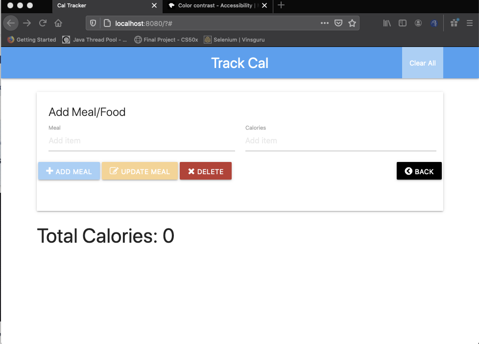
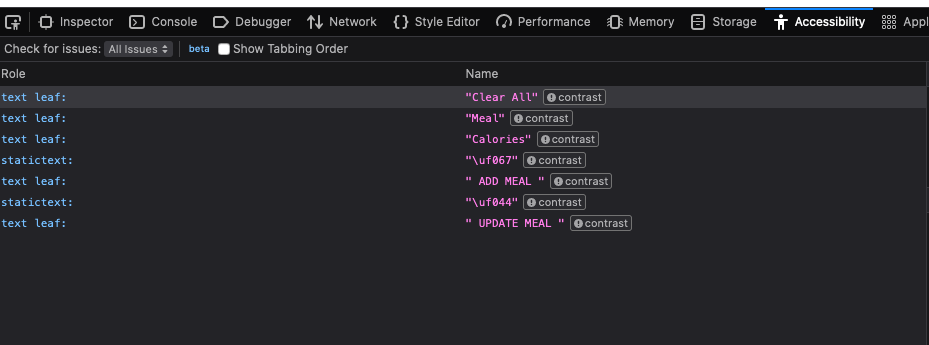

An are of testing that seems to be mostly ignored or left to the end of the development cycle is accessibility testing. Most organisations don't have the skills in house to carryout this function and the activities involved in accessibility testing are often contracted to external organisation as an audit outside normal development sprints. Gaining more understanding of this area of testing is important and could reduce the issues raised by external accessibility auditors thereby reducing issues to be fixed as a result of such audits.
This post seeks to make more sense of this area of testing. I will be starting from a vary simple web page and identifying the issues with the page and then move on the fix the identified issues.
The SUT is hosted in github. The following is an image of the initial look of the page:

The application is a calories tracker for monitoring the number of calories that the user has consumed. The focus of this post is to identify common accessibility issues and try to resolve such issues based on the WCAG 2.1 Level AAA accessibility standard.
Though majority of application users are able bodied and suffer no observable physical impediments, a significant segment of users suffer from one form of disability or the other and such users should be taken into consideration when building applications. according to wikipedia, Web Content Accessibility standards are sets of recommendations for making web content more accessible for users with disabilities in addition to all users. Checking the above page for accessibility Taking the web page above into consideration, the content presented on the page do not meet the accessibility standards expected for web applications.
When conducting accessibility testing,some of the tests to be conducted include:
All the above considerations also apply to native devices and can be done simple by loading the application into a browser on the device.
There are several tools available for checking for web accessibility issues and most of them are free. Some of them include:
The following are tools that can be installed in browsers to assist with accessibility testing. The latest version of Firefox browser comes with a few accessibility testing tools installed including the accessibility done inspector.
A more complete list of tools and there level of accuracy with finding accessibility bugs can be found at : Accessibility tools audit results - Overview - GDS accessibility team (alphagov.github.io)
Some of the above tools can be integrated into the development cycle and executed automatically when the application is built. Though it is fast and convenient to run sites through automated testing tools, it should not be a replacement for physical user inspections. This is because automated testing tools are not able to find all accessibility issues.
A simple inspection of the page will indicate that there are accessibility issues with the site. I will be using Firefox developer edition for this and may move on to other tools later.
The Accessibility inspector can be viewed by right clicking in the page and selecting either 'inspect accessibility properties' or 'inspect elements' from the menu that pops up. The accessibility inspector can also be seen when the when inspecting an element. It is listed as one of the tabs.
When tabbing through, the page, the location of the element that is focus gets missing along the way until the user enters into the Meal text box. The Buttons under the text boxes are also ignored when tabbing. Any easy way to check if the element received focus is to ask javascript with 'document.activeElement'. The active element will be highlighted when you mouse over the element returned in the javascript console. In this case the buttons did not receive focus.
Contrast can be seen fairly easily, but a convenient way to check from the Firefox browser is to select 'all issues' from the Check for issues dropdown to the left of the developer console. This should highlight any issues identified by the browser.
This indicates that there are 7 accessibility issue all related to contrast.

Image of issues reviled by Firefox browser